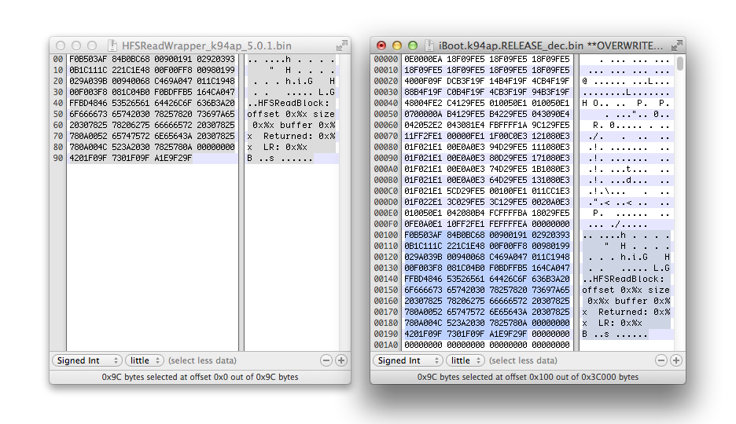

Set HFSReadBlock( ) wrapper
This writeup is based on @p0sixninja's work, we already know that this iBoot HFS+ heap buffer overflow is exploitable. Initial fuzzing and bug discovery won't be discussed in this writeup for now, although they are very interesting to learn about.
We consider that we already know that setting catalogFile.extents[1].blockCount of the HFS+ header to a huge number is triggering the bug. Knowing that, we now need a way to see what does iBoot tries to read from the corrupted HFS+ header before the panic occur. Note that iBoot only interects with HFS when it is ready to search for a kernelcache image on the filesystem or when it prepares an OTA upgrade.
HFSInitPartition([args])
{
print("HFSInitPartition...")
HFSReadBlock(uint offset, uint size, uint buffer)
}
HFSReadBlock(uint offset, uint size, uint buffer)
{
//Function code
}
We will set a wrapper function around HFSReadBlock(uint offset, uint size, uint buffer) which will print args passed to. In other words, we will replace the call to HFSReadBlock() by HFSReadWrapper() in HFSInitPartition(). Then, HFSReadWrapper() will print out arguments passed to HFSReadBlock(). The code of HFSReadWrapper() was written by @nyan_satan. It is a reimplementation of HFSReadBlock() but with some additional code to print args the original function receive such as offset, size, buffer and return value. Since HFSReadBlock() is reimplemented, we don't have to call this function from our wrapper.
The function in iBoot which parse a HFS+ partition should now looks like this.
HFSInitPartition([args])
{
print("HFSInitPartition...")
HFSReadWrapper()
}
HFSReadWrapper()
{
// Do the same as HFSReadBlock() does.
// Print offset, size and buffer from the read.
}
Here's the sample code found in @nyan_satan's exploitation kit. I marked as 0x######## the addresses that needs to be set according to the device and iBoot version you are working on.
.text
.pool
.set BASEADDR, 0x########
.set printf, 0x########
.global _start
_start:
.code 16
PUSH {R4-R7, LR}
ADD R7, SP, #0xC
SUB SP, SP, #0x10
LDR R4, [R7, #0x8]
STR R0, [SP]
STR R1, [SP, #0x4]
STR R2, [SP, #0x8]
STR R3, [SP, #0xC]
MOV R3, R1
MOV R1, R2
MOV R2, R4
LDR R0, =ARGS_STR+BASEADDR
BL _printf
LDR R0, [SP]
LDR R1, [SP, #0x4]
LDR R2, [SP, #0x8]
LDR R3, [SP, #0xC]
STR R4, [SP]
LDR R0, [R0]
LDR R4, [R0, #0x1C]
BLX R4
MOV R1, R0
LDR R0, =RET_STR+BASEADDR
BL _printf
MOV R0, R1
ADD SP, SP, #0x10
POP {R4-R7, PC}
_printf:
PUSH {R0-R7, LR}
LDR R4, =printf
BLX R4
POP {R0-R7, PC}
ARGS_STR:
.ascii "HFSReadBlock: offset 0x%x size 0x%x buffer 0x%x\n\x00"
RET_STR:
.ascii "Returned: 0x%x\n\x00"
Second, printf is the address of where the printf function is located in iBoot. This function is responsible to output characters to terminal (by UART or irecovery). The text you see when looking at the iBoot console must call this function before being printed.
Let's disassemble iBoot using Ghidra, a free disassembly tool brought to us by NSA. Ghidra will turn the binary data into readable assembly code that we will look at to find interesting functions in the bootloader.
To disassemble the iBoot image, it must be first decrypted. Use xpwntool to do this, without the -decrypt flag because we don't want to keep the .img3 header. Also, be sure you work on the same iBoot image as the vulnerable iBoot one flashed on your device. In our case, we will decrypt iOS 5.0.1 one.
pmbonneau-mac#xpwntool iBoot.k94ap.RELEASE.img3 iBoot.k94ap.RELEASE_dec.bin -iv e71a9b61becdaf35ccad7a2112353b6a -k 9f07fec9333e87c717cef55ac58483e07f704fafd2b130baf77699fbf6189b2c
In a new Ghidra project, import the decrypted iBoot image. Note that Ghidra will copy the image file to the project. You can choose to write patches we will find directly into the decrypted iBoot image or make a copy of it and work on that copy.
Select "ARM v7 32-bit Little Endian Thumb" (ARM v7 32-bit Little Endian Thumb) as language. Press "OK" to continue. Open the imported iBoot image. Let Ghidra analyze the file.
Keep default options.
Wait until Ghidra has completely analyzed the image. The disassembled output should looks like this.
Let Ghidra analyze the file.
Keep default options.
Wait until Ghidra has completely analyzed the image. The disassembled output should looks like this.
By default, any opened iOS bootloader images will be based to 0x00000000. In order to represent as much as possible the real device environment, you need to rebase the image to the address for which the image is set to run. The rebase address is often in the first 0x120 bytes of the image, in the ARM initialization section. You can easily notice it by the instuction bx r1 [base_addr], for which base_addr value usually has few 0's in. For example, 0x84000000 (A4 LLB) and 0x5FF00000 (A4 iBoot). Note that base_addr is shared between devices with same processor.
For an iPad2,2 (A5) iBoot, our rebase address is 0x9FF00000. Go to "Window", then "Memory Map".
Click on the house icon at the upper right, then enter the base address found in the disassembled code.
Image base should now starts at RAM address 0x9FF00000.
You should see that addresses in the disassembled code are now updated to reflect the memory layout of the device on which the bootloader image is intended to run.

We are finally set, now ready to work with the disassembled image.
Let's search for the printf function. This function is relatively simple to find, code pattern is like put a string in a register then call the function. The register in question is r0.
In Ghidra toolbar, click on "Search" then "Program Text".
We must search for a string we know that will be shown in the iBoot console using irecovery or UART. A good one is "Kernelcache image not valid", which appears when iBoot can't read the kernelcache image (invalid, corrupted or not found).
Search for "Kernelcache image not valid" and select "All fields".

Ghidra should bring you to a table where most iBoot strings are located.
Click on the address of the string found to select it. In Ghidra toolbar, click on "Search" then "For Direct References".

You should see one result found. Be sure that "To Location" points to the proper string address.
Double-click on the reference found.
Follow the reference of that code, it is called by a function. Hold the mouse over the referenced function.
We found the kernelcache load image function. Double-click on where you hold the mouse, Ghidra will bring you to the function.
In fact, Ghidra should brings you right before the printf function. This is where the string is loaded into the r0 registry that will be used by printf.
The call to the printf function should looks like bl [printf address].
For iPad 2nd (K94AP) iOS 5.0.1 iBoot, the printf function address is 0x9FF2E9A0. Set this address in the HFSReadWrapper code.
Important : Since you are calling a function in armv7 thumb, you must do [function_address] + 0x1. So, we set the code like this.
.set printf, 0x9FF2E9A1
Now, let's find the ideal base address for our payload. Open the decrypted iBoot image in a hex editor, then look for an empty spot. The best spots are usually around the banner string (iBoot for ..., Copyright Apple Inc.) or you can also overwrite certificate info. Since the compiled payload is relatively small in size, I will place it around the banner string. For bigger payloads, the other option is preferred. I will place my compiled payload at 0x9FF00100. So, we set BASEADDR in the payload code to 0x9FF00100.
.set BASEADDR, 0x9FF00100
We are now ready to compile the payload code into an armv7 binary. To do this, you must have the arm toolchain installed on your computer. If you are working on MacOS X, you can install the arm-none-eabi-gcc package from MacPorts or from brew with those commands.
brew install binutils
brew cask install https://raw.githubusercontent.com/Homebrew/homebrew-cask/b88346667547cc85f8f2cacb3dfe7b754c8afc8a/Casks/gcc-arm-embedded.rb
pmbonneau-mac#arm-none-eabi-as -mthumb --fatal-warnings -o HFSReadWrapper_k94ap_5.0.1.o HFSReadWrapper_k94ap_5.0.1.s
Copy the compiled object into an arm binary.arm-none-eabi-objcopy -0 binary HFSReadWrapper_k94ap_5.0.1.o HFSReadWrapper_k94ap_5.0.1.bin
A .bin file should be generated, which contains the compiled payload code.Append it to your decrypted iOS 5.0.1 iBoot image, at payload BASEADDR position (0x9FF00100). You can do copy & paste from iHex. Note that 0x9FF00100 is 0x100 in our decrypted image, we must subtract iBoot base address to obtain the address not rebased (for example, 0x9FF00100 - 0x9FF00000 = 0x00000100).

The next step is to hook the HFSReadBlock() function in iBoot, so it runs our payload that will do what this function actually does plus printing args passed to it. Our payload is also made to keep track of iBoot execution stack. So, iBoot will go back to HFSInitPartition() after our payload has finished to run.
This is why we PUSH {R4-R7, LR} and POP {R4-R7, PC} in the payload code.
One usually complicated task to do when calling custom code from a statically disassembled binary is to calculate the branch code. Fortunately, I noticed that Ghidra has a nice branch calculator built-in. Otherwise, you could use ARM branch finder website. Use the ARMv7 THUMB New-Engine.
In Ghidra, we will add a label called "HFS_Read_Wrapper" at address 0x9FF00100 where our wrapper payload code is placed.
Right-click on the address line, then "Add Label...".
Name the new label as "HFS_Read_Wrapper", then click "OK".
The address 0x9FF00100 should be now labeled as specified.
Still in Ghidra, search for the string "HFS" the same way we did previously for "Kernelcache image not valid".
Ghidra will bring you to the first occurrence found, which should be HFSInitpartition. This is the string shown in the iBoot console when iBoot is mounting a HFS+ volume. This string is used by the HFSInitPartition() function in iBoot, so we should be able to find it from there.
Click on the address of the string found to select it. In Ghidra toolbar, click on "Search" then "For Direct References".
You should see one result found. Be sure that "To Location" points to the proper string address.
Double-click on the reference found.
Follow the reference of that code, it is called by a function. Hold the mouse over the referenced function.

Double-click on where you hold the mouse, we land directly into iBoot HFSInitPartition() function.
Note that the function 0x9FF2E9A0 called below is printf, to print the string HFSInitPartition. The next function call you see in the disassembled code bl FUN_9FF13B20 is actually the one that interests us. This is a branch to the HFSReadBlock() function.
Double-click on function branch line, bl FUN_9FF13B20, Ghidra will bring you to the disassembled code of the HFSReadBlock() function.
Select the function entry point 0x9FF13B20, then right-click and select "Patch Instruction".
We want to place a hook to our wrapper payload from HFSReadBlock() function. So, we will replace the HFSReadBlock() function entry point to a branch to our wrapper payload. The branch instruction is pretty simple, b.w [our label we set for the payload].
Ghidra will automatically calculate the operation code hexadecimal value and even, it will add a nice arrow at the left that should point to our payload code.
We must now apply this patch to our decrypted iBoot image. Using an hexadecimal editor, go to the HFSReadBlock() function address. In the hexadecimal editor, it will be at 0x13B20 because the image is not rebased.
The patched instruction is four bytes of length. Replace four bytes from the HFSReadBlock() function address by the four bytes Ghidra calculated for us. For this example, we replace 0x0068D0F8 by 0xECF7EEBA.
With this patch applied, that iBoot image should now execute our payload code when it calls HFSInitPartition() to read the System partition HFS+ volume.
We still have another patch to do that goes with the exploitation environment setup. As I said earlier in this writeup, we will have to eventually corrupt a HFS+ volume header in order to trigger the bug. We will definitively not corrupt the system partition one without having an exact idea of how it goes in the device memory. In order to make our exploitation environment more suitable for development and debugging, we will patch iBoot to use the additional partition that we created earlier (labeled as Exploit) instead of the system one.
We created the Exploit partition at the third position, right after main iOS Data one. In iBoot, partition indexation start from index 0 to index 7 (remember that we can't have more than eight partitions when using LwVM). So, our third partition will have index 2, also known as the index used by iBoot to identify the OTA upgrade partition.
- Replace hard-coded values of boot-command from fsboot to upgrade.
- Change default boot-partition value from 0 to 2.
In iBoot, there's a set of hard-coded NVRAM variables that are only considered when there is no corresponding one set in NVRAM. In other words, variables set in NVRAM override the ones hard-coded in iBoot. For example, if we set boot-command variable in NVRAM with upgrade as value, iBoot will do upgrade instead of default fsboot routines. If the boot-command variable is not set in NVRAM, iBoot will read it from its hard-coded set and get the value fsboot by default.
If we don't force boot partition, the custom iBoot image we will execute using kloader to dry-run our exploit will always mount the stock System partition on which we did not corrupt the filesystem for obvious reasons.
Let's patch the hard-coded fsboot boot-command to upgrade in our decrypted iOS 5.0.1 iBoot image. When we will run iBoot using kloader, it will mount the partition indexed by 2 and attempt an OTA upgrade which will fail because our Exploit partition isn't even formatted.
The first occurrence found should be the right one. In the hexadecimal view, it looks like 006673626F6F7400. The first 0x00 corresponds to the beginning of the string and the last 0x00 corresponds to the end. The address of this string is the one of the first character, right after the first 0x00. For "fsboot", this is 0x2FA0F.
Search now for the string "upgrade".There are multiple occurences of that one as I know, be careful. Only choose the one which has 0x00's around it, like I said for "fsboot" The right string should looks like 007570677261646500 and its address is 0x2FA1C.
Open the decrypted iBoot image in Ghidra, then open the "Search program text" menu.
Search for the "fsboot" address rebased.
0x9FF00000 + 0x2FA0F = 0x9FF2FA0FGhidra will bring you to a reference to the "fsboot" string address.
Double-click on the line to follow the reference.
The address that interests us is 0x9FF011D4, we will replace the value at this address by the "upgrade" string address.
In the hexadecimal editor, go to address 0x9FF011D4 - 0x9FF00000 = 0x11D4.
Replace the value 0xF0FAF29F (0x9FF2FA0F), "fsboot", by 0x1CFAF29F (0x9FF2FA1C), "upgrade".
Save changes, then upload the patched file to device using SCP. I suggest you create a folder named "bootloaders" in the root directory of the system partition then upload the file into it.
From a SSH connection, run the patched iBoot image using kloader to see if our patches work as expected.ipad-k94ap#kloader /bootloaders/iBoot.k94ap.RELEASE_HFSReadWrapper.bin

The patched iBoot image should run a few seconds after. If everything is okay, you should see the output of our wrapper and the message "Invalid HFS signature" over UART. This message is a normal behaviour, because our Exploit partition is not formatted.
Our work environment is finally set, we are now ready to exploit the vulnerability.